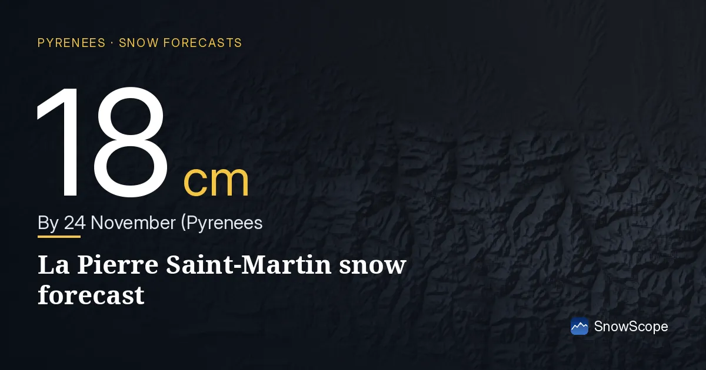
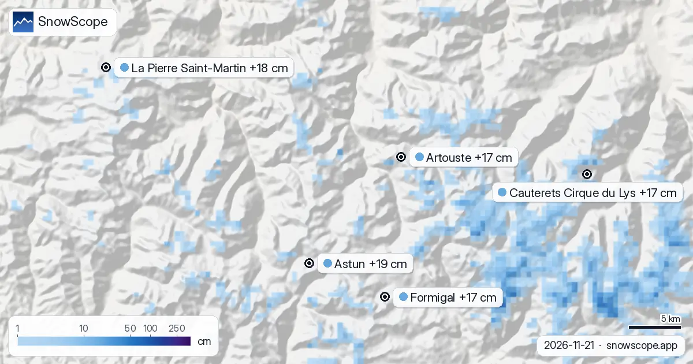

La Pierre Saint-Martin snow forecast: 18 cm by 24 November (Pyrenees)
La Pierre Saint-Martin will collect 18 cm of fresh snow by Tuesday 24 November, with the heaviest falls expected on Sunday and Monday. Across the Pyrenees, up to 30 cm is forecast at the highest points of the region, but rain threatens the lower slopes and upper runs on Saturday as the freezing level climbs above the summits.
See the live snow forecast for La Pierre Saint-Martin in the SnowScope appSnow depth, powder alerts and the 3D map, free.
Where the snow sits now
Cauterets Cirque du Lys leads the region with 19 cm on its upper slopes. Artouste holds 14 cm, Astun 9 cm, and La Pierre Saint-Martin 6 cm. Only 39 of the 53 Pyrenees resorts have snow at height; the region shows 1,360 km² of white ground as of Friday 21 November.
The comparison with past winters is mixed. At 1,832 m on La Pierre Saint-Martin, the depth today is deeper than in 20 of the past 46 winters on this date, though a typical 21 November there holds just 3 cm. Astun at 1,965 m is deeper than in 9 of 46 past winters, with a normal depth of 5 cm for late November.
| Resort | Snow depth | New snow, 72 h | Coming, next days | Top |
|---|---|---|---|---|
| Astun | 9 cm | 8 cm | 19 cm | 2,272 m |
| La Pierre Saint-Martin | 6 cm | 9 cm | 18 cm | 2,146 m |
| Artouste | 14 cm | 7 cm | 17 cm | 2,038 m |
| Cauterets Cirque du Lys | 19 cm | 13 cm | 17 cm | 2,420 m |
| Formigal | 3 cm | 9 cm | 17 cm | 2,264 m |

Rain and snow by height on Saturday
Saturday 21 November brings a critical day: the freezing level at La Pierre Saint-Martin rises to between 2,750 m and 3,050 m, well above the summit at 2,146 m. This means rain or wet snow will fall across all slopes. At Astun, the freezing level reaches 3,020 m at its peak, again above the top lift at 2,272 m. Artouste faces the same pattern, with the freezing level sitting at 2,620 m to 3,010 m while the resort tops out at 2,038 m.
Wet snow on Saturday will make the surface heavy and, after a cold night, icy on Sunday morning. Groomed runs will ski better than off-piste terrain in this window. Plan your day accordingly: Saturday is a day for tree skiing or lower-angle slopes where the ice can be managed.
Sunday and Monday: the main snow push
Real snow arrives with Sunday 22 November and Monday 24 November. La Pierre Saint-Martin is forecast to pick up 10 cm on Sunday and 6 cm on Monday. At the same time, Astun receives 9 cm on Sunday and 8 cm on Monday, while Artouste collects 9 cm on Sunday and 6 cm on Monday.
The freezing level on Monday 24 November sits lower than on Saturday: at La Pierre Saint-Martin it ranges from 2,450 m to 2,870 m, still above the summit but far closer. By then, snow should be dry snow across the terrain, especially at and above 1,900 m where the best accumulation happens.
Snow by elevation: where it matters most
The pattern is clear at height. At La Pierre Saint-Martin, the base at 1,519 m receives 19 cm over the next 7 days, the mid-zone at 1,832 m gets 25 cm, and the top at 2,146 m reaches 30 cm. The upper slopes win, as always in early season.
Astun shows the same trend: 19 cm at 1,659 m, 28 cm at 1,965 m, and 30 cm at the top (2,272 m). Artouste, the highest of these resorts, adds 24 cm at its base (1,775 m), 26 cm at mid-height (1,906 m), and 29 cm at the summit (2,038 m). Above 2,000 m across the region, 29–30 cm is a realistic total by Tuesday.
The region transforms
Snow-covered ground in the Pyrenees is forecast to triple by Tuesday 24 November: from today's 1,360 km² to 5,210 km² if the forecast holds. The number of resorts with snow above the village level will jump from 39 to 47. This is not a small shift; it reshapes which valleys and which slopes become skiable.
Tuesday 24 November is the horizon for this forecast. After that date, weather patterns can change, so check the map again on Monday evening before you plan your trip.
Timing and tactics
If you are heading to these resorts, Monday 24 November is the best window: dry snow at height, minimal rain risk, and two full days of accumulation behind it. First lifts on Monday morning will offer the best powder experience before the sun and other skiers work the surface.
Saturday's high freezing level is a constraint. Unless you are comfortable on icy slopes, save Saturday for lower terrain or groomed runs, then return to the high slopes once Monday's snow is set and tracked out slightly.
Tips for skiers
- Check the official Météo-France avalanche bulletin before touring or skiing off-piste. The danger level is low today, but it may change as snow accumulates.
- On Saturday, ski as high as the lifts allow to stay above the rain line, but expect wet, heavy snow that freezes overnight into ice.
- Monday 24 November after a cold night is the prime time: get on the first lift to ski dry snow before it softens in the sun.
- Forecasts 3 to 4 days ahead can shift. Check the map again on Monday evening to confirm the totals and timing before you travel.
- Use the SnowScope app to set a powder alert for La Pierre Saint-Martin so you know when fresh snow arrives.
About these numbers
Resort snow depths are the deepest snow on the resort's upper slopes on the date shown; they are estimates for an area, not a measurement at one point. Forecasts can change. Always read the official avalanche bulletin before going off-piste.
Official avalanche bulletins: Météo-France – Bulletin d'estimation du risque d'avalanche
Cite this report
For research, teaching or the press: the numbers and charts are free to reuse under CC BY 4.0 with this citation.
SnowScope (2026), La Pierre Saint-Martin snow forecast: 18 cm by 24 November (Pyrenees), https://snowscope.app/blog/en/2026/11/pyrenees-la-pierre-saint-martin-snow-forecast-21-november-2026.html, accessed 2026-11-21
SnowScope (Atlas Labs). (2026, November 21). La Pierre Saint-Martin snow forecast: 18 cm by 24 November (Pyrenees). SnowScope snow reports. https://snowscope.app/blog/en/2026/11/pyrenees-la-pierre-saint-martin-snow-forecast-21-november-2026.html
BibTeX
@misc{snowscope2026pyreneeslapierresaintmar,
author = {{SnowScope (Atlas Labs)}},
title = {La Pierre Saint-Martin snow forecast: 18 cm by 24 November (Pyrenees)},
year = {2026},
month = nov,
howpublished = {\url{https://snowscope.app/blog/en/2026/11/pyrenees-la-pierre-saint-martin-snow-forecast-21-november-2026.html}},
note = {Published 2026-11-21 11:14 UTC; accessed 2026-11-21}
}· CC BY 4.0 · Methods, data and tools →
La Pierre Saint-Martin: snow and temperature by height, this winter vs last (tools) →
Follow La Pierre Saint-Martin
Free: a message when fresh snow is coming, and the forecast every morning.
More snow reports

For a low-cost December family ski week at Astún-Candanchú, aim for late December when top slopes hold good snow in 67 % of past winters.

The Pyrenees will see 91 cm of new snow in the next 14 days, with half falling in week 1. Upper slopes above 2500 m get the most. Forecast from 2026-11-18.

Pyrenees snow report, 15 November. Mixed rain and snow: snow is expected only up high, about 7–19 cm near the top of Cauterets Cirque du Lys …